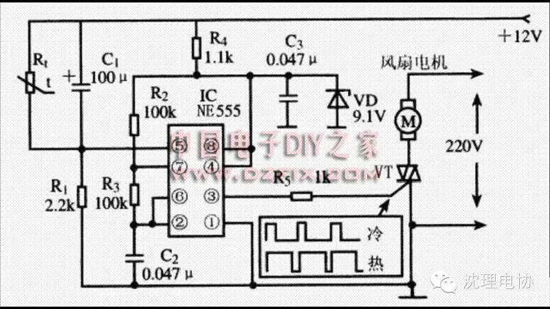

使用小程序
这是一个电风扇自动温控调速器，可根据温度变化情况自动调节电风扇的转速，电路加以调整，也可用于其它电气设备的控制。
一、电路工作原理
电路原理如图所示。
图中IC 是555 时基电路，与R2、R3 和C2 等元件构成多谐振荡器，可发出占空比可调
的矩形波信号。当温度变化时，热敏电阻的阻值发生变化，改变多谐振荡器输出方波的占空
比，调节双向晶闸管VT 的导通角，从而改变风扇电极两端的电压，自动调节电风扇的转速。
二、元器件选择
集成电路IC选用NE555时基电路，也可使用LM555和TLC555等型号。VT为双向晶闸
管，其耐压应在400V以上，额定电流应根据所控制的电风扇容量来合理选用。电阻R1～R5
可选用普通1/8或1/4W碳膜电阻器；Rt为负温度系数热敏电阻，可选常温下阻值为10KΩ
左右的热敏电阻。电容C1选用普通铝电解电容器；电容C2和C3选用涤纶电容器。VD为稳
压值为9.1V的稳压二极管。
三、制作与调试方法
制作时可自制印刷电路板，也可使用万能印刷电路板。电路安装完成后，可人为改变热
敏电阻Rt 的温度，观察风扇电机的转速情况。若温控效果不理想，可适当调整热敏电阻的
阻值或温度变化范围。

关注沈理电协（微信：sylgdzxh）
每一次转发和分享都是对我们的肯定。